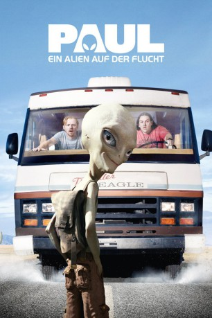

gesehen am 10.09.2015
gesehen am 10.09.2015Alternativ: Paul gesehen am 10.09.2015
 
 IMDB-Wertung: 7.0 / 10
IMDB-Wertung: 7.0 / 10  Metascore:
Metascore: 
Paul ist ein Alien und hat die letzten 60 Jahre auf einer streng geheimen Militärbasis der Amerikaner abgehangen. Doch dann bricht er aus dem Lager aus und besteigt das erstbeste Gefährt, das er findet – ein Wohnmobil, in dem die Erdlinge Willy und Clive unterwegs sind. Die beide sind Science-Fiction-Fans auf Pilgerfahrt zur Area 51. Nun haben sie ein Alien am Hals und Bundesagenten im Nacken. Ausserdem ist da noch der fanatische Vater eines jungen Mädchens, das sie versehentlich entführt haben.
Jahr: 2011
Dauer: 104 Minuten
FSK: 12
Land: USA Studio: Universal PicturesTonspuren: DTS - ,
Untertitel:
Auflösung: 1080p (1920×816) Größe: 5468 MB
Genre: Sci-Fi, Komödie, Abenteuer
Regisseur: Greg Mottola
Drehbuch: Simon Pegg, Nick Frost
Soundtrack: David Arnold
Darsteller:
 Mia Stallard als Young Tara
Mia Stallard als Young Tara Simon Pegg als Graeme Willy
Simon Pegg als Graeme Willy Nick Frost als Clive Gollings
Nick Frost als Clive Gollings Jeffrey Tambor als Adam Shadowchild
Jeffrey Tambor als Adam Shadowchild David House als Security Guard
David House als Security Guard Bobby Lee als Valet
Bobby Lee als Valet Jane Lynch als Pat Stevens
Jane Lynch als Pat Stevens David Koechner als Gus
David Koechner als Gus Jesse Plemons als Jake
Jesse Plemons als Jake Seth Rogen als Paul
Seth Rogen als Paul Jason Bateman als Agent Zoil
Jason Bateman als Agent Zoil Sigourney Weaver als The Big Guy
Sigourney Weaver als The Big Guy Bill Hader als Haggard
Bill Hader als Haggard Joe Lo Truglio als O'Reilly
Joe Lo Truglio als O'Reilly Mark Sivertsen als State Trooper
Mark Sivertsen als State Trooper Joe Berryman als Gas Station Attendant
Joe Berryman als Gas Station Attendant Kristen Wiig als Ruth Buggs
Kristen Wiig als Ruth Buggs John Carroll Lynch als Moses Buggs
John Carroll Lynch als Moses Buggs Steven Spielberg als Steven Spielberg
Steven Spielberg als Steven Spielberg Mike Miller als Police Officer
Mike Miller als Police Officer Blythe Danner als Tara Walton
Blythe Danner als Tara Walton David Fernandez Jr. als Comic Con , uncredited
David Fernandez Jr. als Comic Con , uncredited Michael Neal Powell als Bartender , uncredited
Michael Neal Powell als Bartender , uncreditedDatei: X:\2011(N-Z)\Paul - Ein Alien auf der Flucht (2011, FSK12, 1920x816).mkv seit 15.01.2015
Festplatte: HD 2011(G-Z)
 Es gibt insgesamt 132 Filme in der Gruppe '2011(N-Z)'
Es gibt insgesamt 132 Filme in der Gruppe '2011(N-Z)'